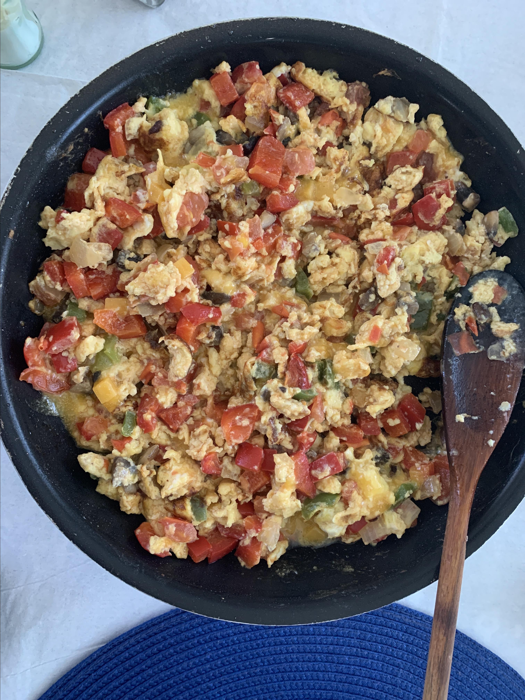

Scrambled Egg

Description
Scrambled eggs is a dish made from eggs (usually chicken eggs) stirred, whipped or beaten together while being gently heated, typically with salt, butter, oil and sometimes other ingredients
Ingredients
- ¼ cup olive oil
- ¼ cup sliced fresh mushrooms
- ¼ cup chopped onions
- ¼ cup chopped green bell peppers
- 6 eggs
- ¼ cup milk
- ¼ cup chopped fresh tomato
- ¼ cup shredded Cheddar cheese
Steps
- Heat olive oil in a skillet or frying pan over medium-high heat. Add mushrooms, onions and peppers; saute until onions are transparent.
- In a mixing bowl, beat together eggs and milk. Add egg mixture to vegetables; stir in tomatoes. Cook until eggs are set. When eggs are almost done, mix in cheese. Serve immediately.